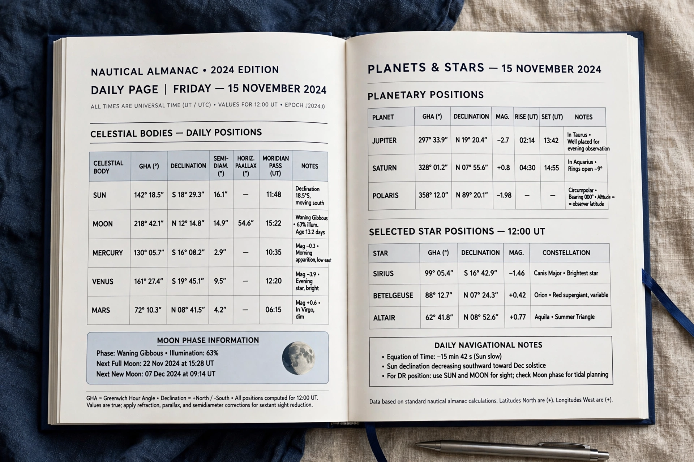

Nautical Almanac
A nautical almanac is a publication containing astronomical data used by navigators for celestial navigation — principally the positions (Greenwich hour angle and declination) of the Sun, Moon, planets and selected stars for every hour of the year.

History
The first British Nautical Almanac and Astronomical Ephemeris was published for the year 1767 under Nevil Maskelyne, the Astronomer Royal, and was instrumental in the determination of longitude at sea by the lunar distance method. The American Ephemeris and Nautical Almanac began in 1852. Since 1958 the British and American almanacs have been unified in content and published jointly by HM Nautical Almanac Office and the US Naval Observatory.
Use
Combined with a sextant measurement and sight-reduction tables, almanac data let a navigator compute a position line from any celestial body. Though largely supplanted by GPS, celestial navigation with the almanac remains a backup skill taught in naval and merchant-marine training, drawing on positions listed in star catalogues.